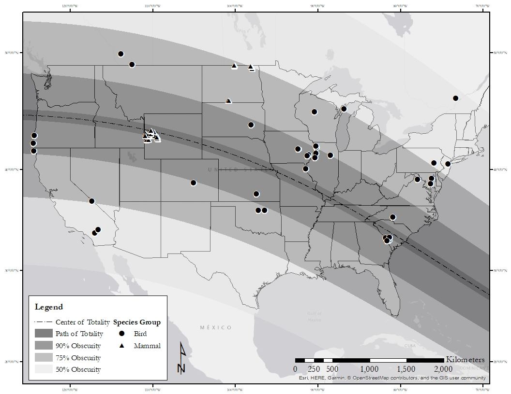

#------------------------- Eclipse Percent Py ------------------------------------------#
# Sourced from : Graeme Coates, March 18, 2015
# Accessed: 10/8/21
# https://www.chromosphere.co.uk/wp-content/blogs.dir/1/files/2015/03/eclipse_percent.py
# https://www.chromosphere.co.uk/2015/03/18/eclipse-calculations-using-python/
#---------------------------------------------------------------------------------------#
# Modified by Rob Ritson, 10/18/2021 into a function for Great American Solar Eclipse
# Args: Longitude (dd.mmmm), Latitude (dd.mmmm), Elevation (meters)
# Returns: MaxEclipseTime (GMT), MaxEclipsePercent (obscuration), FirstContactTime, LastContactTime
# Uses Python module ephem
#---------------------------------------------------------------------------------------#
import ephem
import math
import numpy as n
from operator import itemgetter
def check_non_zero(x):
return x > 0
def eclipse_calculator(longitude, latitude, elevation):
"""Calculate Eclipse Conditions"""
timetuple=(2017, 8, 21, 00, 00, 00)
gatech=ephem.Observer()
gatech.epoch= '2017'
gatech.date=timetuple
gatech.lon=longitude
gatech.lat=latitude
gatech.elevation=elevation
gatech.compute_pressure()
sun, moon = ephem.Sun(gatech), ephem.Moon(gatech)
results=[]
for x in range(0,86400):
gatech.date= (ephem.date(ephem.date(timetuple)+x*ephem.second))
sun.compute(gatech)
moon.compute(gatech)
r_sun=(sun.size/2.0)/3600.0
r_moon=(moon.size/2.0)/3600.0
s=n.degrees(ephem.separation((sun.az, sun.alt), (moon.az, moon.alt)))
try:
if s<(r_moon+r_sun):
lunedelta=0.25*math.sqrt((r_sun+r_moon+s)*(r_moon+s-r_sun)*(s+r_sun-r_moon)*(r_sun+r_moon-s))
else:
lunedelta=None
percent_eclipse=0
if lunedelta:
lune_area=2*lunedelta + r_sun*r_sun*(math.acos(((r_moon*r_moon)-(r_sun*r_sun)-(s*s))/(2*r_sun*s))) - r_moon*r_moon*(math.acos(((r_moon*r_moon)+(s*s)-(r_sun*r_sun))/(2*r_moon*s)))
percent_eclipse=(1-(lune_area/(math.pi*r_sun*r_sun)))*100
results.append([gatech.date.datetime(),s,sun.size,moon.size,lune_area if lunedelta else 0, percent_eclipse])
except ValueError:
pass
gen=(x for x in results)
max_eclipse=max(gen, key=itemgetter(5))
MaxEclipseTime = str(max_eclipse[0])
MaxEclipsePercent = max_eclipse[5]
gen=(x for x in results)
try:
FirstContactTime = str(next(x for x in gen if check_non_zero(x[5]))[0])
except:
FirstContactTime = str('NA')
try:
LastContactTime = str(next(x for x in gen if x[5]==0)[0])
except:
LastContactTime = str('NA')
out = [MaxEclipseTime, MaxEclipsePercent, FirstContactTime, LastContactTime]
return outSolar Eclipse and Wildlife Movements
During my master’s thesis, I completed a side project funded by a NASA mini-grant which assessed wildlife movements during the 2017 Great American Solar Eclipse. GPS data was provided by a number of collaborators from across the country. I published one article related to this research, and another is currently in preparation, but the analysis is on-going. I recently enhanced this analysis by leveraging the powerful astronomical calculation Python module ephem into a function called by R to assess the conditions of the solar eclipse experienced by each recorded location of each individual animal in order to parse potential behavioral changes related to the eclipse. This research is currently being prepared for Movement Ecology.

Python function
I created a function in Python inspired by a script I found which calculated the start time for a particular eclipse (March 2015) at one particular location. I expanded it to return the start and end times of the eclipse, the time of the maximum eclipse, and the maximum obscuration percentage (how much of the sun was blocked at the eclipse maximum).
In the next step, I could subset the locations of individuals which actually experienced the eclipse, based on whether the timestamp of the particular location was within the start and end time of the eclipse at that location, and calculate how much of the sun was obscured at that particular instance. This will be used in further analyses in R examining behavioral change points and segementation to examine whether changes in behavior correspond with or relate to eclipse conditions.
------------------------- Eclipse Percent Py ------------------------------------------#
# Sourced from : Graeme Coates, March 18, 2015
# Accessed: 10/8/21
# https://www.chromosphere.co.uk/wp-content/blogs.dir/1/files/2015/03/eclipse_percent.py
# https://www.chromosphere.co.uk/2015/03/18/eclipse-calculations-using-python/
#---------------------------------------------------------------------------------------#
# Modified by Rob Ritson, 1/17/2022 into a function for Great American Solar Eclipse
# Args: hr (hour), mn (minutes), sc (seconds), Longitude (dd.mmmm), Latitude (dd.mmmm), Elevation (meters)
# First three arguments are used to create timetuple object for calculating eclipse circumstances
# Returns: percent eclipse
# Uses Python module ephem
#---------------------------------------------------------------------------------------#
import ephem
import math
import numpy as n
def eclipse_calculator_local(hr, mn, sc, longitude, latitude, elevation):
"""Calculate Eclipse Conditions"""
timetuple=(2017, 8, 21, hr, mn, sc)
gatech=ephem.Observer()
gatech.epoch= '2017'
gatech.date=timetuple
gatech.lon=longitude
gatech.lat=latitude
gatech.elevation=elevation
gatech.compute_pressure()
sun, moon = ephem.Sun(gatech), ephem.Moon(gatech)
sun.compute(gatech)
moon.compute(gatech)
r_sun=(sun.size/2.0)/3600.0
r_moon=(moon.size/2.0)/3600.0
s=n.degrees(ephem.separation((sun.az, sun.alt), (moon.az, moon.alt)))
if s<(r_moon+r_sun):
lunedelta=0.25*math.sqrt((r_sun+r_moon+s)*(r_moon+s-r_sun)*(s+r_sun-r_moon)*(r_sun+r_moon-s))
else:
lunedelta=None
percent_eclipse=0
if lunedelta:
lune_area=2*lunedelta + r_sun*r_sun*(math.acos(((r_moon*r_moon)-(r_sun*r_sun)-(s*s))/(2*r_sun*s))) - r_moon*r_moon*(math.acos(((r_moon*r_moon)+(s*s)-(r_sun*r_sun))/(2*r_moon*s)))
percent_eclipse=(1-(lune_area/(math.pi*r_sun*r_sun)))*100
return percent_eclipseR Code
This R script calls the the above Python script using reticulate, executes these in parallel using the furrr package, then saves the outputs for further analysis.
## Calculate Local Circumstances of Great American Solar Eclipse ####
# Load required packages
lapply(c("data.table","reticulate","furrr","readr","progressr","future"),require,character.only=T)
# Source Python Script (EclipseCalculator.py)
reticulate::source_python("C:/Users/r2j2r/Documents/Research Projects/eclipse/EclipseCalculator.py")
# Load data
df <- data.table::fread("C:/Users/r2j2r/Documents/Research Projects/eclipse/GASE_elevation.csv")
str(df)
df$Latitude <- as.character(df$Latitude)
df$Longitude <- as.character(df$Longitude)
## Calculate Local Circumstances of Eclipse
#todo <- df
todo <- subset(df,!(df$ID %in% out_df$ID))
out_df <- NULL
for(i in 1:length(unique(todo$ID))){
elev_df <- subset(todo, todo$ID == unique(todo$ID)[i])
arg_list <- elev_df[,c("Longitude","Latitude","elevation")]
colnames(arg_list) <- NULL
future::plan(multicore,workers = availableCores()-1) #parallel processing
skip <- F
tryCatch({
progressr::with_progress({
p <- progressr::progressor(steps = nrow(arg_list))
final <- furrr::future_pmap(arg_list, function(long, lat, elev){
p() #add progress bar
e <- eclipse_calculator(long, lat, elev)
})
})
},error = function(e){skip <<- T})
if(skip){next}
final_df <- data.frame(matrix(unlist(final), nrow = length(final), byrow=TRUE))
colnames(final_df) <- c("MaxEclipseTime","MaxObscuration","FirstContact","LastContact")
out <- cbind(elev_df,final_df)
out[["MaxEclipseTime"]] <- as.POSIXct(out[["MaxEclipseTime"]],format = "%Y-%m-%d %H:%M:%OS",tz="GMT")
out[["FirstContact"]] <- as.POSIXct(out[["FirstContact"]],format = "%Y-%m-%d %H:%M:%OS",tz="GMT")
out[["LastContact"]] <- as.POSIXct(out[["LastContact"]],format = "%Y-%m-%d %H:%M:%OS",tz="GMT")
out_df <- rbind(out_df, out)
print(paste("Iteration",i,"of",length(unique(todo$ID)),"Completed"))
}
readr::write_csv(out_df,"C:/Users/r2j2r/Documents/Research Projects/eclipse/GASELocalConditions.csv")
nas <- subset(out_df,is.na(out_df$FirstContact)) #Indiv 154 is only NAs (brown pelican)
out_df<- subset(out_df,!is.na(out_df$FirstContact))
any(is.na(out_df$FirstContact))
readr::write_csv(out_df,"C:/Users/r2j2r/Documents/Research Projects/eclipse/GASELocalConditions.csv") #Clean file
#####
## Calculate Eclipse Duration and Identify Eclipse Locations ####
require(lubridate)
eclipse <- data.table::fread("C:/Users/r2j2r/Documents/Research Projects/eclipse/GASELocalConditions.csv")
eclipse$interval <- lubridate::interval(eclipse$FirstContact, eclipse$LastContact)
eclipse$duration_sec <- as.numeric(lubridate::as.duration(eclipse$interval))
eclipse$active_eclipse <- ifelse(eclipse$Timestamp %within% eclipse$interval,'Yes','No')
readr::write_csv(eclipse,"C:/Users/r2j2r/Documents/Research Projects/eclipse/GASELocalConditions.csv")
####
## Load packages
lapply(c("data.table","reticulate","furrr","readr","progressr","future"),require,character.only=T)
## Load Data
eclipse <- data.table::fread("C:/Users/r2j2r/Documents/Research Projects/eclipse/GASELocalConditions.csv")
# Subset Eclipse Locations
active <- subset(eclipse,eclipse$active_eclipse=='Yes')
active$hour <- lubridate::hour(active$Timestamp)
active$minute <- lubridate::minute(active$Timestamp)
active$second <- lubridate::second(active$Timestamp)
# Calculate percent eclipse for each location recorded during the eclipse #
reticulate::source_python("C:/Users/r2j2r/Documents/Research Projects/eclipse/EclipseCalculatorLocalConditions.py")
## Calculate Local Circumstances of Eclipse Conditions
arg_list <- active[,c("hour","minute","second","Longitude","Latitude","elevation")]
colnames(arg_list) <- NULL
future::plan(multicore,workers = availableCores()-1) #parallel processing
progressr::with_progress({
p <- progressr::progressor(steps = nrow(arg_list))
final <- furrr::future_pmap(arg_list, function(hr, mn, sc, long, lat, elev){
p() #add progress bar
e <- eclipse_calculator_local(hr, mn, sc, long, lat, elev)
})
})
final_df <- data.frame(matrix(unlist(final), nrow = length(final), byrow=TRUE))
colnames(final_df) <- "Observed_Obscuration"
out <- cbind(active,final_df)
readr::write_csv(out,"C:/Users/r2j2r/Documents/Research Projects/eclipse/GASELocalConditions_Active.csv")
#####